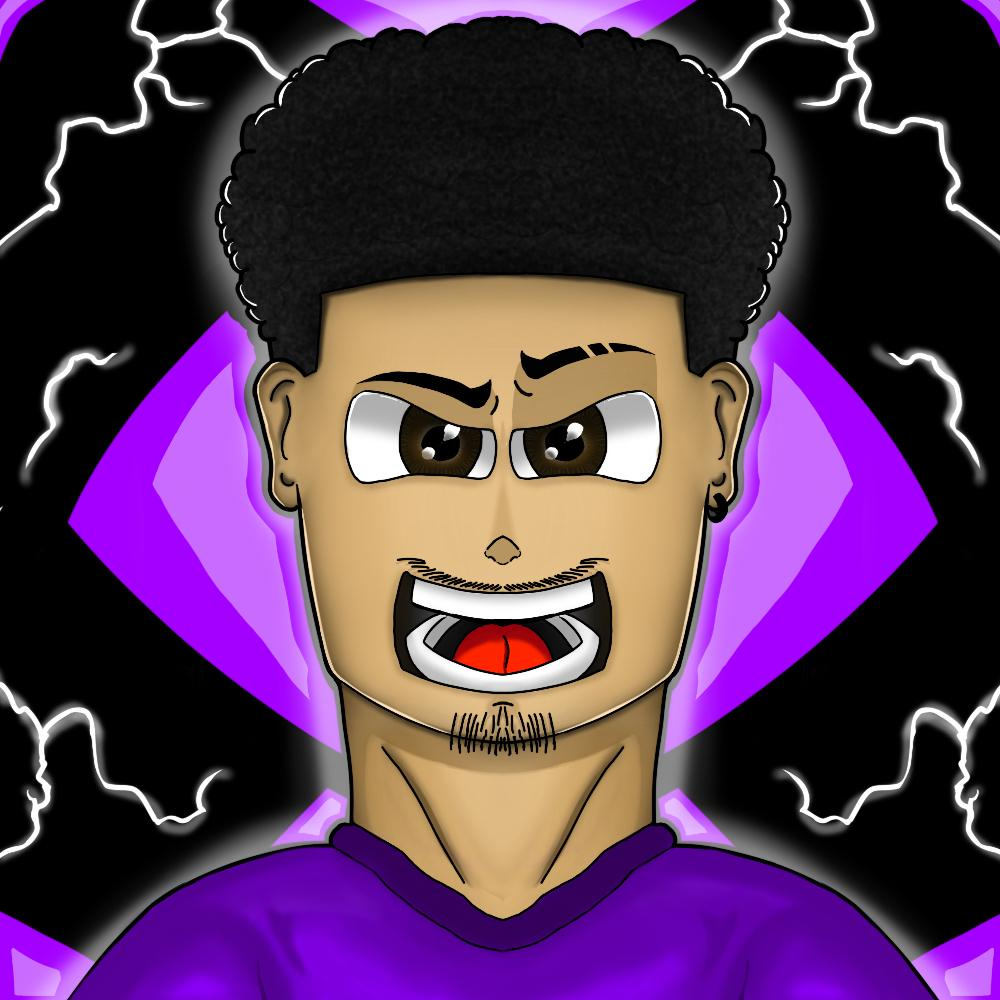
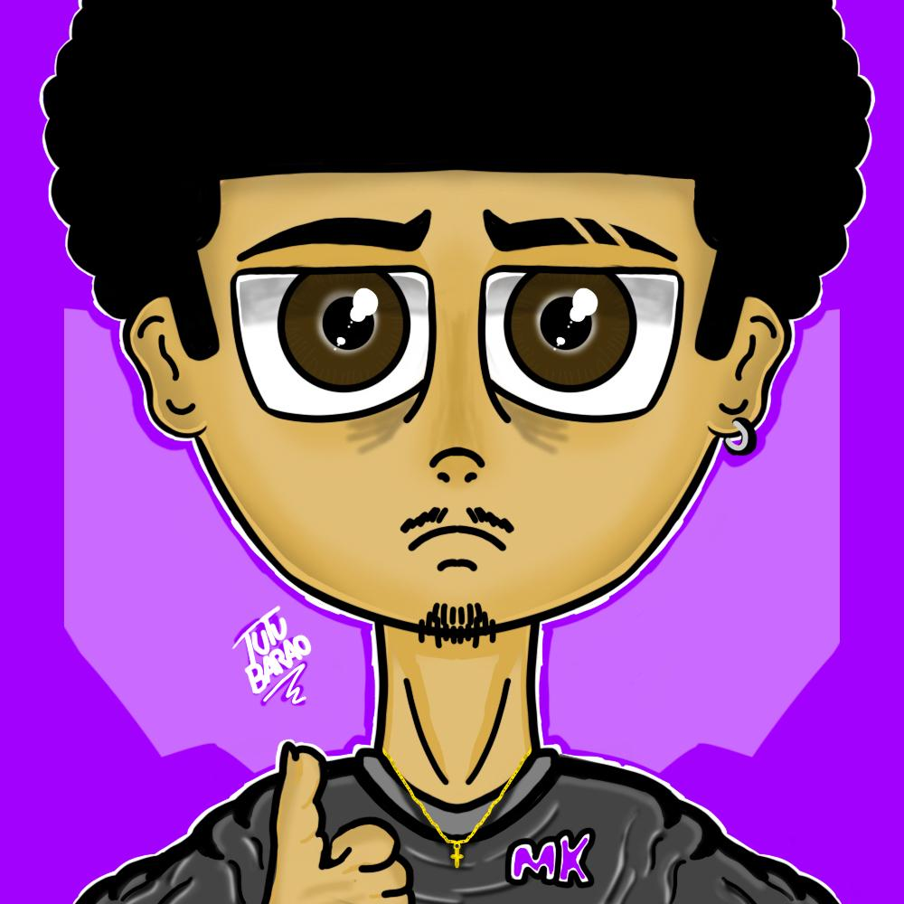

Header

Header feita para estudo e composição de cores do personagem Denji de Chainsaw Man.

Header feita para o aplicativo X(Twitter) do personagem Satotu Gojo de Jujutsu Kaisen
Cartoons
Cartoon feita para o Youtuber Artuzãou BR.
Cartoon criada para estudo de personagem.
Thumbnails

Thumbnail criada para o Youtuber Artuzãou BR, onde foi utilizado o Photoshop.

Thumbnail feita para projeto de Educação Financeira da faculdade.